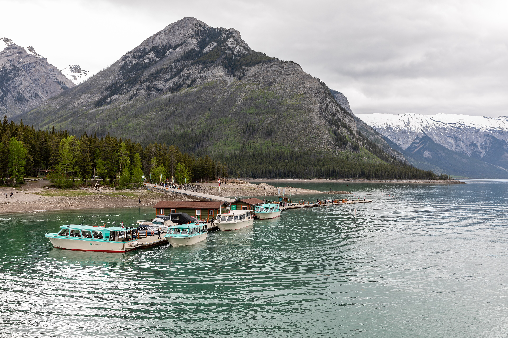
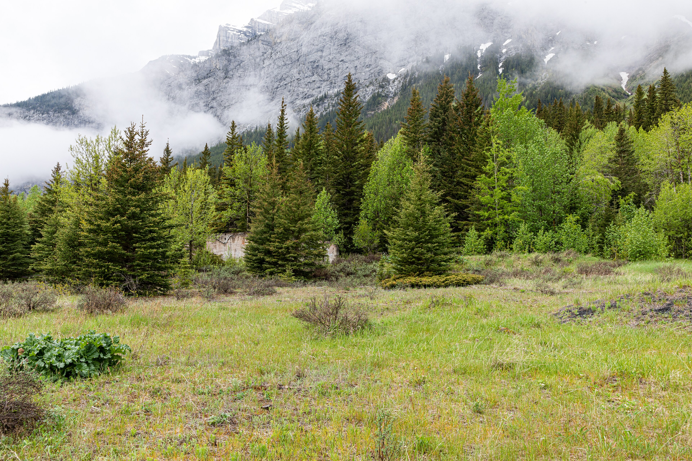
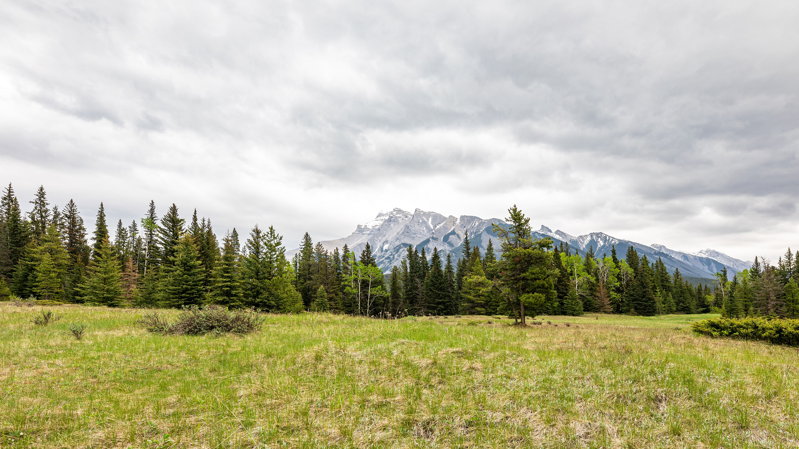
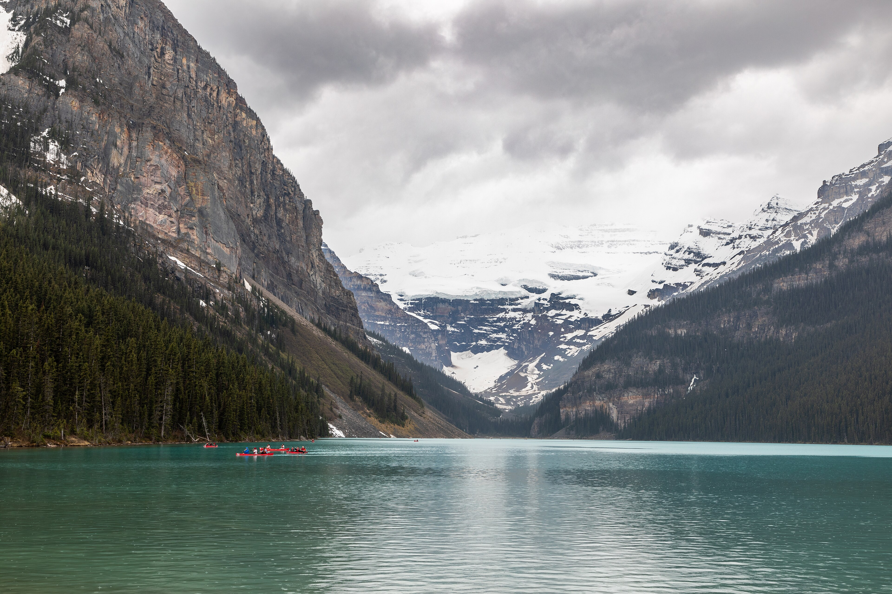
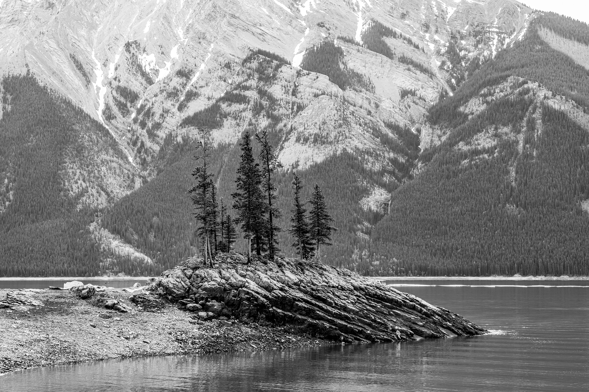
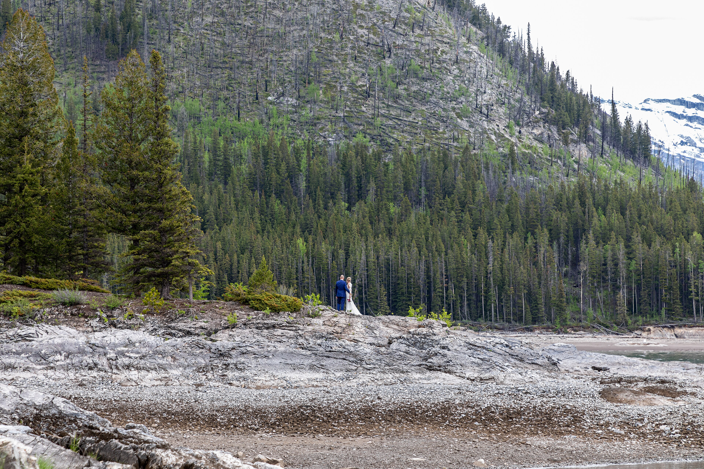
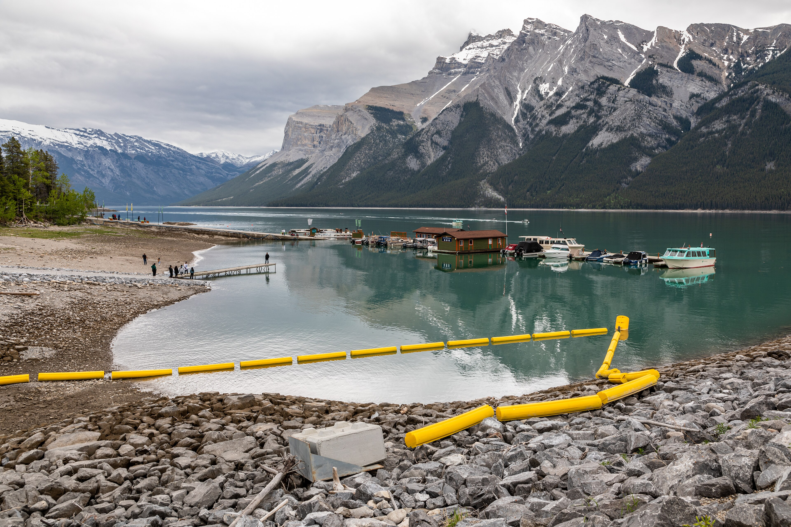

📍 Location: Alberta and British Columbia, Canada
📅 Period: Middle Cambrian (geological origin ~508 Ma); Laramide Orogeny (~80–55 Ma); Holocene human habitation (~10,000 BP–present)
🏷️ Category: Natural
⚠️ Status: UNESCO World Heritage Site (Inscribed 1984, boundary extension 1990)
📏 Significance: Continental watershed; quintessential glaciated alpine landscapes; type locality for the Cambrian explosion via the Burgess Shale; contiguous wilderness corridor supporting apex carnivores

Limestone breaks under ice with a sound like cannon fire. In the high cirques of the Canadian Rockies, silence does not signify the absence of motion; it is merely the pause between fractures. Slabs of ancient ocean floor, hoisted four vertical kilometers into the troposphere and tilted on their edges, endure the relentless wedge of freezing meltwater. Here, the North American continent fractures along its spine. Water running off these ramparts does not share a singular fate. A raindrop landing on the hydrographic apex of the Snow Dome may tumble west to the Pacific Ocean via the Columbia River, north to the Arctic Ocean via the Athabasca and Mackenzie systems, or east into the pastoral interior to join the Saskatchewan River, ultimately reaching the brackish expanse of Hudson Bay.

This landscape overwhelms human scale through sheer verticality. It is not gentle country. The mountains do not swell from the foothills; they rupture them. Towering massifs of gray dolomite and bedded shale present sheer escarpments hundreds of meters high, their strata warped into sinuous anticlines and synclines by tectonic collisions that occurred when dinosaurs still navigated the coastal swamps of the inland sea. Glaciers—pale, sediment-streaked tongue-irons of ancestral ice sheets—still grind through the high saddles, grooving bedrock and producing fine glacial flour that silts the runoff. When sunlight strikes the alpine tarns at midday, suspended particles of rock flour absorb every hue of the spectrum except the blue-green wavelengths, charging lakes like Louise, Moraine, and Peyto with an uncanny, luminescent turquoise.
The UNESCO-inscribed property constitutes an immense contiguous expanse of protected terrain spanning two Canadian provinces. It amalgamates four national parks—Banff, Jasper, Kootenay, and Yoho—alongside three British Columbia provincial parks: Mount Robson, Mount Assiniboine, and Hamber. Together, they safeguard nearly 23,000 square kilometers of alpine peaks, river valleys, hanging glaciers, karst systems, and dense boreal forests.
CONTINENTAL DIVIDE DRAINAGE (SNOW DOME)
│
┌───────────────────────┼───────────────────────┐
▼ ▼ ▼
PACIFIC WATERSHED ARCTIC WATERSHED ATLANTIC / HUDSON
(Columbia River System) (Athabasca / Mackenzie) (Saskatchewan System)
Within this vast cordon, natural process holds sovereign sway. It is a sanctuary where the elemental forces of mountain building, glacial incision, and evolutionary radiation remain legible upon the surface of the earth. From the petrified remains of soft-bodied creatures that swam half a billion years ago to the grizzlies that excavate glacier lily bulbs from the scree slopes each summer, the Canadian Rocky Mountain Parks preserve a dynamic, living archive of the planet's physical and biological history.
To understand the Canadian Rockies, one must first dismantle them. The story does not begin with uplift, but with inundation. Over five hundred million years ago, during the Proterozoic and early Paleozoic eras, western North America sat near the equator as a passive continental margin. Warm, shallow seas stretched across what is now western Alberta, while deeper marine waters plunged off a continental shelf in what is now eastern British Columbia. Over hundreds of millions of years, trillions of marine organisms lived, died, and settled to the seafloor. Carbonate platforms accumulated kilometer-thick sequences of limestone and dolomite; deeper basins collected fine muds, silts, and clays.

These sedimentary beds, stacked like an immense deck of stone cards, did not remain undisturbed. The Mesozoic era brought tectonic revolution. As the North American plate drifted westward, it collided with island arcs and micro-continents riding aboard oceanic plates in the ancestral Pacific. This protracted compressive event, known as the Cordilleran orogeny—encompassing the Columbian and subsequent Laramide mountain-building episodes—acted as a colossal horizontal vice. The crust shortened by hundreds of kilometers.
Instead of buckling uniformly, the massive sedimentary layers snapped along low-angle detachment planes called thrust faults. Slices of older rock, miles thick, were shoveled up and over younger strata, sliding northeastward. This tectonic architecture—termed thin-skinned thrust-and-fold deformation—explains the characteristic look of the Front Ranges and Main Ranges today. Older, hard, resistant carbonates from the Cambrian and Devonian periods were thrust over softer Cretaceous shales, creating asymmetric, serrated ridges with steep cliffs facing northeast and moderate dip slopes angling southwest.
Compressive Force (Pacific Plates) ───► [Thrust Sheets] ───► Overridden Strata
(Slices of Paleozoic limestone ride northeastward over Cretaceous floor)
The high-water mark of this geologic excavation arrived with the Quaternary glaciations. Over the past two million years, repeated continental ice sheets and montane ice caps buried the ranges under two kilometers of ice. Glaciers converted narrow, V-shaped river ravines into monumental, flat-bottomed U-shaped troughs. They plucked rock from headwalls to carve sheer amphitheaters known as cirques, sharpened intersecting ridges into razor-edged arêtes, and planed peaks into pyramidal horns like Mount Assiniboine.
The ice has not vanished entirely. It survives in remnant pockets of the Neoglacial era, most notably the Columbia Icefield—an expansive high-altitude reservoir of ice straddling the Continental Divide. Covering roughly 325 square kilometers, this icefield feeds six major valley glaciers and maintains a frozen grip on the headwaters of the continent. Much like the grand geothermal landscapes of Yellowstone National Park, the Canadian Rockies reveal how planetary thermodynamics reshape the face of the Earth across epochs of unfathomable duration.
High on the ridge between Mount Field and Wapta Mountain in Yoho National Park lies an unpretentious quarry that altered modern paleobiology. Discovered in 1909 by Smithsonian paleontologist Charles Doolittle Walcott, the Burgess Shale captures an epochal chapter in the chronicle of life: the Cambrian explosion. Approximately 508 million years ago, an explosion of multicellular diversity populated the oceans. Before the Burgess Shale, the fossil record belonged almost exclusively to hard mineralized shells, carapaces, and bones. Soft tissues decomposed before mineralization could take place.

The Burgess Shale bypassed this limit. Organisms inhabiting the muddy shallows at the edge of the Cathedral Escarpment—a sheer submarine reef—were swept over the submarine cliff by catastrophic mudslides into anoxic, sediment-choked basins. Buried rapidly in environments devoid of scavengers and oxygen, their delicate gills, intestines, eyes, and segmented limbs were compressed into microscopic carbon films within the Stephen Formation shale.
THE CATHEDRAL ESCARPMENT
(Shallow Carbonate Reef)
══════════════════════════╗
║ ◄── Mud turbidity currents wash soft-bodied life down
║
║ [Anoxic Deep Basin: Preservation of Soft Tissues]
╚════════════════════════════════════════════════════════
The life preserved here resembles a catalog of surreal evolutionary experiments. Walcott and subsequent researchers, notably Harry Whittington, Derek Briggs, and Simon Conway Morris, unearthed organisms that defied existing phyla:
* Opabinia regalis, an animal with five eyes and a flexible frontal nozzle terminating in a claw;
* Anomalocaris canadensis, a half-meter-long apex predator with circular, radiodont mouthparts and compound eyes;
* Hallucigenia sparsa, a creature that walked on paired stilt-like spikes with tentacled feeding tubes running along its back;
* Pikaia gracilens, an unassuming, leaf-shaped swimmer bearing a primitive notochord—placing it among the earliest known ancestors of all vertebrates, including humanity.
To walk across the scree of Fossil Ridge is to stand above the cradle of chordate life. The Burgess Shale does not merely document organisms; it reveals the primary architectural template of modern phyla.
Beyond its fossil matrices, the park network encompasses some of the most complex topography in North America. Mount Robson, the titan of the Canadian Rockies, ascends to 3,954 meters above sea level in its eponymous provincial park, its emperor face presenting an unrelenting wall of ice-draped quartzite. In Banff and Jasper, castellated mountains dominate the horizon. Mount Rundle and Castle Mountain exhibit classic morphology: horizontal beds of resistant cliff-forming limestone punctuated by softer shale benches, eroded into natural battlements.
Below these summits lies an extensive subterranean geography. The soluble limestone strata, combined with vast amounts of acidic meltwater, have dissolved deep karst networks. The Castleguard Cave system, extending beneath the Columbia Icefield for over twenty kilometers, represents the longest explored cave in Canada. It terminates in passages blocked by solid plugs of glacial ice pushed down through ceiling fissures from the icefield overhead—a dark world of speleothems and seasonal flooding where few humans have ever ventured.
Hydrography defines the surface. Lakes fed by glacial streams act as settling basins for pulverized quartz and calcite. The optical properties of these waters change with the seasons; in early spring, before major melting occurs, the lakes appear deep and indigo. By midsummer, saturated with fresh suspended silt, they shift to intense jade and turquoise. In Kootenay National Park, thermal waters surface along tectonic fault lines, giving rise to natural geothermal springs like Radium Hot Springs, while iron-rich mineral springs deposit concentric terraces of red ochre, mined for millennia by Indigenous hunters for paint and ritual pigment.
The verticality of the Rockies forces dramatic ecological zonation over short horizontal distances. Three major bio-climatic zones blanket the terrain:
1. Montane Zone (lowest elevations): Sheltered valley bottoms filled with lodgepole pine, Douglas-fir, trembling aspen, and white spruce. These river corridors—particularly the Bow and Athabasca valleys—serve as winter refuges for ungulates and primary travel corridors for predators.
2. Subalpine Zone (intermediate slopes): Dominated by Engelmann spruce and subalpine fir, ascending to the twisted krummholz formations at the tree line, where centuries-old Lyall’s larch burn gold in the crisp air of autumn.
3. Alpine Tundra (highest reaches): Above the limit of tree growth, cushion plants, saxifrages, and lichens cling to frozen soils, braving winters that last nine months of the year.
This ecological staircase sustains an intact North American mammal assemblage. The Canadian Rockies are an ecological fortress for species that have vanished from much of their historic range southward:
Elevation (m)
▲
│ 3,000m+ [Rock, Ice, and Permanent Snow]
│ 2,200m [Alpine Tundra: Lichens, Saxifrage, Mountain Goats]
│ 1,600m [Subalpine Forest: Engelmann Spruce, Subalpine Fir, Larch]
│ 1,000m [Montane Valley: Lodgepole Pine, Aspen, Elk, Grizzly, Wolves]
▼
Long before these lands were partitioned into national reserves, Indigenous nations traversed these corridors. For over ten thousand years, the Ktunaxa, Secwépemc, Stoney Nakoda, and the nations of the Blackfoot Confederacy (Siksika, Kainai, and Piikani) navigated the mountain passes. They tracked bison into the high foothills, harvested medicinal plants from the subalpine meadows, and quarried chert and obsidian for tools. The mountains were not vacant wilderness, but an inhabited topography invested with sacred significance, traversed by trails that followed the natural contours of river valleys long before the arrival of railway surveyors.
The transformation of this wilderness into a sanctuary of state-sanctioned conservation was catalyzed by industrial ambition. In the late nineteenth century, the Canadian Pacific Railway pushed westward through the Bow Valley, seeking a viable route to the Pacific coast to stitch the young Canadian confederation together. In 1883, railway workers discovered natural thermal springs emerging from the base of Sulphur Mountain. The commercial promise of these hot springs quickly sparked ownership disputes, prompting the federal government under Prime Minister John A. Macdonald to intervene. In 1885, a small reserve of twenty-six square kilometers was set aside around the springs—the seed that grew into Banff National Park, Canada's first national park and only the third such reserve in the world.

The early philosophy of the parks differed radically from modern biocentric conservation. Under CPR general manager William Cornelius Van Horne, the mountains were conceived as a canvas for luxury tourism and nation-building. "Since we can’t export the scenery," Van Horne famously remarked, "we’ll have to import the tourists." Monumental railway hotels were constructed—the Banff Springs Hotel, rising like a Scottish baronial castle from the pine canopy, and Chateau Lake Louise, set beside the glacial waters of Lake Louise. Wealthy travelers from Montreal, London, and New York arrived via Pullman sleeping cars to cross the rugged terrain in comfort, assisted by imported Swiss mountain guides who taught the fundamentals of mountaineering to Victorian aristocrats.
Railway Expansion (1880s) ──► Discovery of Thermal Springs ──► 1885 Reserve Created
│
Biocentric Ecological Model ◄── Commercial Wilderness Tourism ◄────┘
(Current Preservation Focus) (Luxury Railways & Alpine Hotels)
Yet this idyllic aesthetic came at significant social and ecological cost. The establishment of the parks resulted in the systematic exclusion of Indigenous peoples. Park administrators viewed hunting by Indigenous communities as incompatible with conservation and tourism; families were banned from their ancestral gathering grounds, hunting ranges, and spiritual sites through strict pass laws and enforcement by park wardens.
Concurrently, early park management engaged in aggressive ecological manipulation:
* Native predators—wolves, cougars, and wolverines—were systematically poisoned and shot to encourage populations of "game" animals like elk and deer.
* Non-native trout species were introduced into historically fishless alpine tarns, upending aquatic invertebrate balances.
* Fire suppression policies altered forest succession patterns, transforming open, resilient montane parklands into dense, monocultural stands of aged lodgepole pine susceptible to catastrophic wildfire and mountain pine beetle infestations.
These historical manipulations reveal that national parks are never pristine, unauthored fragments of nature. Like the deep cultural layers documented in places such as the Grand Canyon National Park, the Canadian Rockies are an ideological landscape where shifting human priorities regarding wilderness, race, and ecological utility have been violently and artistically negotiated across generations.
Today, the Canadian Rocky Mountain Parks face an existential reckoning brought on by climate change and human popularity. The most visible bellwether of this transformation is the cryosphere. The Athabasca Glacier has lost more than half its volume over the past century, retreating more than 1.5 kilometers and leaving barren gravel moraines in its wake. Glaciers across the parks are melting at an accelerating clip.
This loss extends beyond aesthetics. Glacial melt provides critical streamflow during late summer when seasonal snowpack has disappeared; as glaciers dwindle, baseflows in major continental rivers drop, raising water temperatures and threatening cold-adapted aquatic ecosystems, including endangered bull trout and Westslope cutthroat trout.
GLOBAL WARMING ──► Accelerating Glacial Retreat ──► Diminished Late-Summer Streamflows
│
Threatened Cold-Water Fish ◄── Elevated Water Temps ────┴──► Downstream Hydrologic Deficits
Simultaneously, the pressures of mass tourism threaten to degrade the core wilderness values of the southern parks. Banff and Jasper attract millions of visitors every year, concentrating cars, buses, and human foot traffic within narrow valley bottoms that double as vital migration corridors for large carnivores. Grizzly bears, requiring vast home ranges to maintain viable populations, must navigate a landscape dissected by the Trans-Canada Highway, high-speed rail lines, golf courses, and townsites.
In response, Parks Canada has pioneered world-renowned wildlife connectivity infrastructure. Along the Trans-Canada Highway through Banff, dozens of dedicated wildlife underpasses and massive, vegetation-planted overpasses have been constructed, coupled with miles of continuous highway exclusion fencing. These structures have reduced vehicle-wildlife collisions by more than eighty percent, allowing grizzlies, black bears, wolves, elk, and moose to cross industrial transportation corridors safely.
This human infrastructure reflects a conceptual shift: viewing the landscape not as isolated islands of scenic rock, but as an interconnected biological network that must link southward to the Crown of the Continent ecosystem and northward through the pristine river canyons of Nahanni National Park to the sub-Arctic ranges of Kluane / Wrangell-St. Elias.
The Canadian Rocky Mountain Parks represent far more than a celebrated national playground; they form an indispensable node in the ecological and evolutionary architecture of North America. Here, the planet exposes its deep structural memory. In the Burgess Shale, we look upon the blueprints of complex life—the primordial experiments in morphology that gave rise to every creature possessing a spine, a brain, and bilateral symmetry. In the sheer, folded escarpments of Mount Robson, Castle Mountain, and the Bow Valley, we encounter the immense mechanical power of plate tectonics, which folded the ocean floor like crumpled paper and hoisted it to the level of the clouds.

The contiguous nature of this seven-park network guarantees the preservation of dynamic, landscape-scale ecological processes that have vanished across most temperate zones of the planet. Wildfire, avalanche, glacial retreat, and natural trophic cascades proceed across unbroken corridors, sustained by visionary infrastructure that seeks to reconcile twentieth-century transportation arteries with ancestral wildlife migrations. As ecological pressures mount across the planet, this vast sanctuary functions as a vital biological reservoir, sheltering the full complement of northern montane flora and fauna within an interconnected wilderness network.
THE TRIAD OF SIGNIFICANCE
┌───────────────────────┼───────────────────────┐
▼ ▼ ▼
PALEONTOLOGICAL TECTONIC & GLACIAL ECOLOGICAL INTEGRITY
Deep-time genesis of Active thin-skinned Continental corridor
multicellular life mountain-building and for large carnivores
(Burgess Shale) watershed systems and unfragmented zones
To stand at dusk upon the shoreline of an alpine lake in Yoho or Jasper is to experience a landscape that is both indifferent and sublime. As the last rays of sunlight turn the summit pyramids from amber to deep violet, the thermal winds drop, and the turquoise waters settle into a mirror of stone and sky. The silence that follows is layered with subtle movements: the faint rattle of shale down a talus slope, the crack of a serac collapsing on a hanging glacier, the bugle of an elk echoing along the valley bottom.

These mountains remind humanity of its geological youth. The limestone massifs were built over hundreds of millions of years by tiny marine organisms whose compressed skeletons now rise above the clouds. The landscapes of Banff, Jasper, Yoho, and Kootenay command humility. They present an uncompromising standard of wildness, insisting that the ultimate value of the wilderness lies not in what it offers for our consumption or recreation, but in its capacity to endure, wild and intact, beneath the sweep of deep time.
Q1: What is the Canadian Rocky Mountain Parks World Heritage Site?
The site is a contiguous UNESCO World Heritage property encompassing four Canadian national parks—Banff, Jasper, Kootenay, and Yoho—and three British Columbia provincial parks: Mount Robson, Mount Assiniboine, and Hamber. It was inscribed in 1984 for its exceptional natural beauty, glaciated topography, intact mountain ecosystems, and the globally significant Cambrian fossil beds of the Burgess Shale.
Q2: Why is the Burgess Shale so famous?
Located in Yoho National Park, the Burgess Shale is one of the world's most significant fossil discoveries. It dates to the Middle Cambrian epoch (~508 million years ago) and preserves the delicate, soft-bodied parts of early marine life with exceptional clarity. This fossil site yielded crucial evidence regarding the sudden diversification of multicellular animal life known as the Cambrian explosion.
Q3: When is the best time of year to visit the parks?
July and August offer the warmest weather, snow-free alpine hiking trails, and fully accessible mountain passes, though these months see the highest visitor traffic. September is ideal for viewing the golden fall foliage of alpine larches and experiencing the annual elk rut, with fewer crowds. Winter (December through March) transforms the parks into a center for ice climbing, snowshoeing, and world-class skiing, though high-altitude backcountry routes present substantial avalanche risks.
Q4: How do the wildlife overpasses and underpasses work?
To prevent wildlife collisions along the widened Trans-Canada Highway through Banff, Parks Canada constructed over forty dedicated wildlife underpasses and six major vegetated overpasses. These structures are lined with natural soil, rocks, and native flora, flanked by hundreds of kilometers of wildlife-exclusion fencing. Animals like grizzlies, wolves, cougars, and elk learn to use these corridors, re-establishing historical migration pathways across transportation infrastructure.
Q5: What are the primary ecological threats facing the parks today?
The most severe threats include climate change, which drives rapid glacial recession, reduces summer water flow in downstream river systems, and alters alpine vegetation regimes. Additionally, high volumes of automotive tourism strain valley-bottom ecosystems, while imported invasive species, non-native fish, and historic fire suppression policies pose long-term challenges to native biodiversity and forest health.
| Detail | Information |
|---|---|
| Nearest Gateway Cities | Calgary, Alberta (1.5 hours east of Banff); Edmonton, Alberta (3.5 hours east of Jasper); Vancouver, British Columbia (access via Trans-Canada / Yellowhead corridors) |
| Primary Access Routes | Trans-Canada Highway (Highway 1) for Banff and Yoho; Icefields Parkway (Highway 93N) connecting Banff and Jasper; Yellowhead Highway (Highway 16) for Jasper and Mount Robson |
| Best Season | Late June through September for alpine hiking and lake access; December through April for snow sports and winter landscapes |
| Current Operational Status | Open year-round; select high-elevation roads, passes, and backcountry campgrounds operate on seasonal schedules (summer only) |
| Required Permissions | Parks Canada Discovery Pass (or day passes) required for all national park entry; backcountry camping permits are mandatory and require advance reservation; guided access only for the Walcott Quarry (Burgess Shale) |
| Site Interpretation Centers | Banff Park Museum National Historic Site; Cave and Basin National Historic Site (Banff); Columbia Icefield Discovery Centre (Jasper); Yoho Visitor Centre (Field, BC) |
| Visitor Advisories | Bear safety protocols are mandatory (carry EPA-approved bear spray, hike in groups, secure all food in bear-proof lockers); mountain weather changes rapidly; winter travelers must equip vehicles with winter tires and carry chains |
| Fact | Detail |
|---|---|
| Site Name | Canadian Rocky Mountain Parks |
| Location | Rocky Mountains, Alberta and British Columbia, Canada |
| Category | Natural (UNESCO Criteria vii, viii) |
| UNESCO Inscription | 1984 (Extended in 1990 to include provincial parks) |
| Total Protected Area | Approximately 22,991 km² (5,681,000 acres) |
| Constituent Parks | Banff, Jasper, Kootenay, Yoho National Parks; Mount Robson, Mount Assiniboine, Hamber Provincial Parks |
| Highest Peak | Mount Robson (3,954 m / 12,972 ft) |
| Primary Rock Types | Cambrian to Cretaceous limestones, dolomites, quartzites, and shales |
| Paleontological Type Locality | Burgess Shale (Stephen Formation, Yoho National Park; ~508 Ma) |
| Hydrological Apex | Snow Dome (Columbia Icefield) — Triple continental divide to Pacific, Arctic, and Atlantic/Hudson Bay |
| Indigenous Territories | Traditional lands of the Ktunaxa, Secwépemc, Stoney Nakoda, Siksika, Kainai, and Piikani nations |
| First Park Established | Banff National Park (originally |